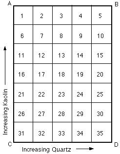
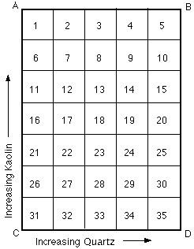
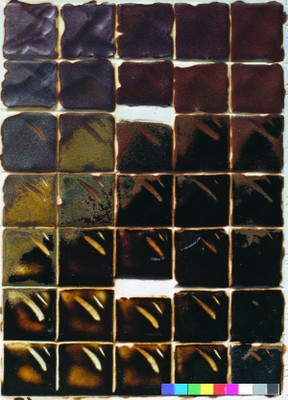

Principles - Varying Fluxes 1: Limestone (Calcium) Glazes
Using Grid tiles to illustrate the role of the flux Calcium oxide (CaO) in glazes. WORK IN PROGRESS.
WORK IN PROGRESS
THE USE OF CALCIUM IN GLAZES
"Calcium oxide (calcia or lime) is a strong flux in stoneware glazes and is one of the most commonly used stoneware fluxes (usually with a little K20 (potash)) because of the benefits it imparts, including making the glazes more stable, reliable, less sensitive to odd variables in the kiln. This reliability over a wide range of compositions and firing conditions is responsible for its being perhaps the main flux in a large range of 'middle-of-the-road' stoneware glazes. It may cause more responsive behaviour, however, if used in excess. Although it normally acts as a flux, increased addition of calcium oxide will (as with any ceramic materials) eventually have the opposite effect, so that the melting point of the glaze is rising as you add more. This process of over-loading the glaze is accompanied by the formation of very small crystals of anorthite (CaO.AI203.2SiO2) and also wollastonite (CaO.SiO2). This is a very common way of obtaining matt glazes and includes calcium matts and calcium-alumina matts." This extract from "Stoneware Glazes - A Systematic Approach" page 43 is referring to high-fire glazes. Calcium oxide is also used widely in mid-fire and low-fire glazes for the same reasons.
Some of the points made in the above extract from my first book are evident in the following grid tiles. These tiles all belong to the 0.7 Limestone Set. This is a set of glazes with the flux set of feldspar and whiting in the ratio of 7 to 3. So glaze No. 31 which is made up entirely of flux materials has a recipe of 70% Feldspar and 30% Whiting.
Base Glaze Set
 

1. Note glaze 31 is not melted, especially where it is thick. This is the glaze that has the maximum quantity of flux, but to get it to melt in this case we have to increase either/or kaolin and quartz. This seems against common sense, as we normally think of kaolin and silica as being refractory materials, and yet here they actually take over some of the fluxing (melting) role. This illustrated the important principle of eutectics. Which can be summarised: the lowest melting point will be achieved by a balance of ingredients.
Adding Iron Oxide to the Set
Calcium oxide has an important role in glazes containing iron oxide. The effect of iron as a colourant is largely determined by whether the iron is dissolved in the glaze or crystallises out. Calcium oxide is very effective in dissolving the iron.
The following tile has iron oxide added to the base glaze set above, 10% of red iron oxide in every glaze.

Comments:
1. Look at the diagonal zone from C up to B. Around C the glazes are an amber or honey colour. Here the iron is dissolved into the glaze. Around B the glazes are a rust red saturated iron glaze. Here the iron is crystallising out. The intermediate stage between these extremes is the black tenmoku glazes (rust where thin) around the middle of the set. This transition from the iron dissolving to the iron crystallizing out is an important transition in iron glazes. It can be achieved in a number of ways, including simply adding more iron to the glaze. However in this case all the glazes have the same percentage of iron oxide added (10%); the transition is the result of increasing alumina and silica as we move from C across to B. Alternatively we can think of this being a decrease in lime as we increase the alumina and silica, and therefore a decrease in the ability of the glaze to dissolve iron oxide.
2. There is a diagonal zone of earthy yellow alumina matt glazes around Nos. 12 and 16 (where thick), and 17 and 21 (where thin). This is a well-known high-alumina iron yellow effect. It can be improved by adjusting the flux set, and other variables, but here is is plainly evident with this simple set of fluxes.
3. Clay-Glaze Interface. Look closely at glaze 21. Where it is thick it is transparent shiny dark-honey colour. Where it is thin it is semi-opaque matt yellow. The thin section looks more like the thick part of glaze 16, or the thick part of glaze 12. Similarly, if you look at the thin part of 12, it looks more like the thick part of the glaze above, glaze 7. What is happening here? It is normal in mid- and high-firing for the glaze to strongly attack the clay body and form a considerable clay-glaze interface that is intermediate in composition between clay and glaze. In the two examples quoted, the glaze where thin is effectively higher in alumina and silica, this being taken from the clay.
SOURCES OF CALCIUM
1. Calcium carbonate (CaCO3) occurs in nature in several forms important to the potter:
a. limestone (or calcite)
b. marble
c. chalk and others.
The
whiting that we use in our glazes is usually ground calcite and is
typically fairly pure (around 99%). Calcium carbonate, having a
relatively low specific gravity, readily remains in suspension in the
glaze slip and assists in keeping heavier materials suspended.
2. Dolomite (CaCO3. MgCO3) will be covered in magnesia glazes.
3.
Wollastonite (CaO. SiO2) is a commonly occurring mineral which is
available from pottery suppliers fairly cheaply. In his book Oriental
Glazes, Nigel Wood recommends it over whiting for the production of
more authentic Chinese glazes.
4. Wood ash is often high in CaO.
According to Cardew Pioneer Pottery, page 54, Applewood ash contains
70.9% CaO, and tallowwood (eucalyptus microcorys) contains 52% CaO.
Herbert Sanders in his book, The World of Japanese Ceramics, gives on
page 239 a recipe for 'synthetic common ash', which when used by
itself, gives a very 'ash-like' glaze. It contains 62% limestone.
 Previous: Glaze Principles - Varying Alumina and Silica - 2
Previous: Glaze Principles - Varying Alumina and Silica - 2